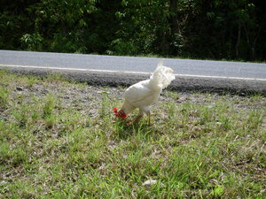
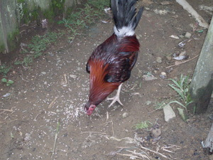
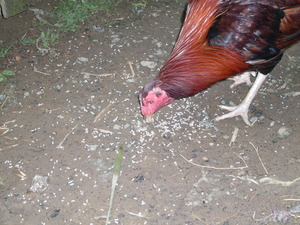

tuktuk   
/tuktuk/
n.
n.
the bill (of a bird)
Malayat ka tuktuk te bayaku ne neutel ku.
The bird has a long beak which I caught.
Eng. bill; beak
Tag. tukâ
Ceb. tukà; sungó
Ilo.: síppit; otob
OCM: Ethnozoology (825)
DDP: Parts of a bird (1.6.2.1)
Online dict status: -
Usage level: M
v.
for the birds and snakes (egtuktuk, migtuktuk/intuktuk, agent, eg><ø-) to peck something (egtuktuken, intuktuk/migtuktuk/pigtuktuk, patient, eg><en-)
Eng. peck; eat; bite
OCM: Ethnozoology (825)
DDP: Animal movement (1.6.4.1), Animal eating (1.6.4.2)
Online dict status: -
Usage level: M
v.
for the birds and snakes (egpanuktuk, migpanuktuk/impanuktuk, actor, eg><ø-paN-) to keep on pecking something (egpanuktuken, impanuktuk/migpanuktuk/pigpanuktuk, patient, eg><en-pA-) somewhere (egpanuktukan, impanuktukan/migpanuktukan/pigpanuktukan, location, eg><an-pA-)
Ka egpanuktuk iyan ka himu te me mananap ne due tuktuk iling te me manuk-manuk ne egmanlayang wey egmananap, me ayam iling te manuk, bi-bi, patuk, gansà, wey masalig pad ka duma. Iyan seini ka paahi ran te peg-ehet, pegkeen wey pegbulig te minsan nekey ne eggimuwen. Ka igkarangeb ne igpasabut kayi iyan ka himu te uled ne egdungkè-dungkè emun ke egkahat, wey ka pegtibas te etew ne iyan igpareeg ka irung te minsan nekey ne meireb n inggen-genan din.
Egtuktuken ad e perem te uled ne diyè migbulukù te tued su natingkemed te intibas ku ka lawa te tued.
I am almost bitten by the surprised snake resting in the stump for I chopped on the body of the stump.
Pangalawa niyu ka me manuk due te ahelayan su egpanuktuken ka imbubul ta.
Drive away the chickens in the cornfield for they will going to eat the seeds we planted.
Eng. peck; eat (for birds); bite
Ceb. tuka
OCM: Ethnozoology (825)
DDP: Animal movement (1.6.4.1), Animal eating (1.6.4.2)
Online dict status: -
Usage level: M
v.
for someone (egkatuktuk, natuktuk, agent, egkA><ø-) to be accidentally peck by animals
Eng. accidentally peck
Online dict status: -
Usage level: M
Updated by: RJH,AAA,TME,RJH,NJK,RJH,QDL
Last updated: 05/Feb/2010
This page last updated: 03-Jan-2020
Copyright © 2009-2014, Matigsalug Language Christian Association, Inc